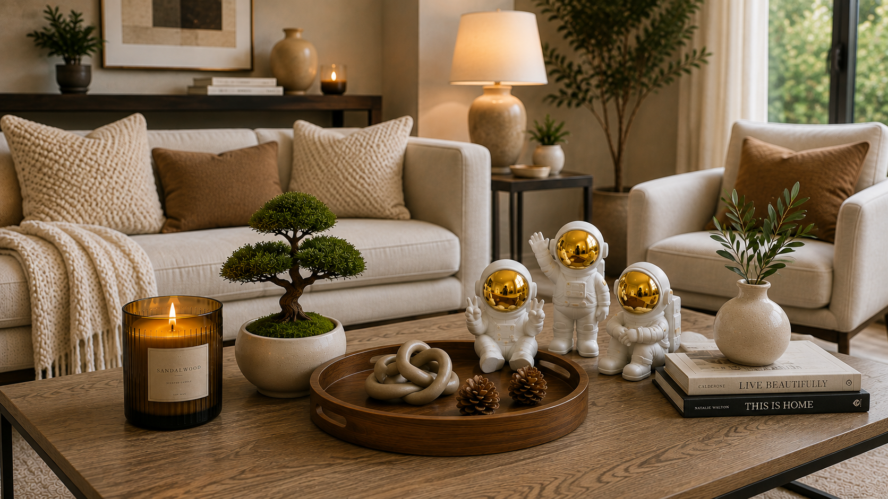
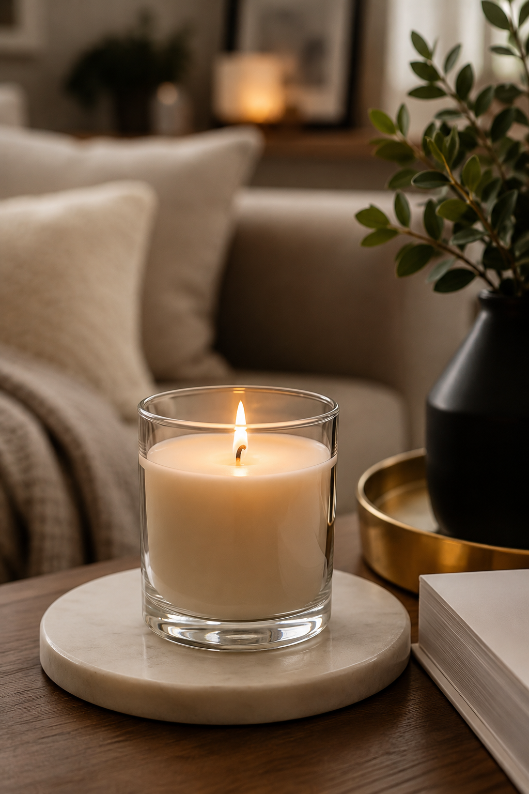
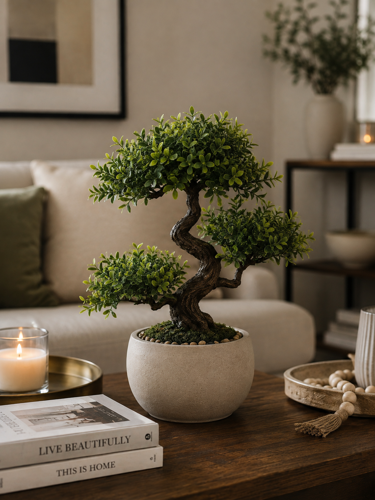
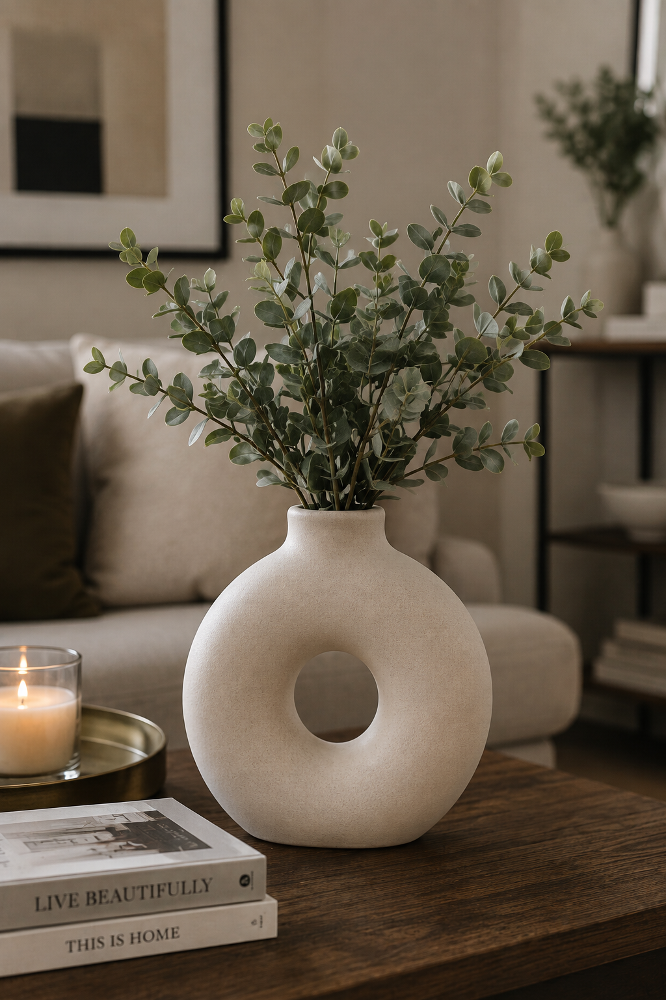
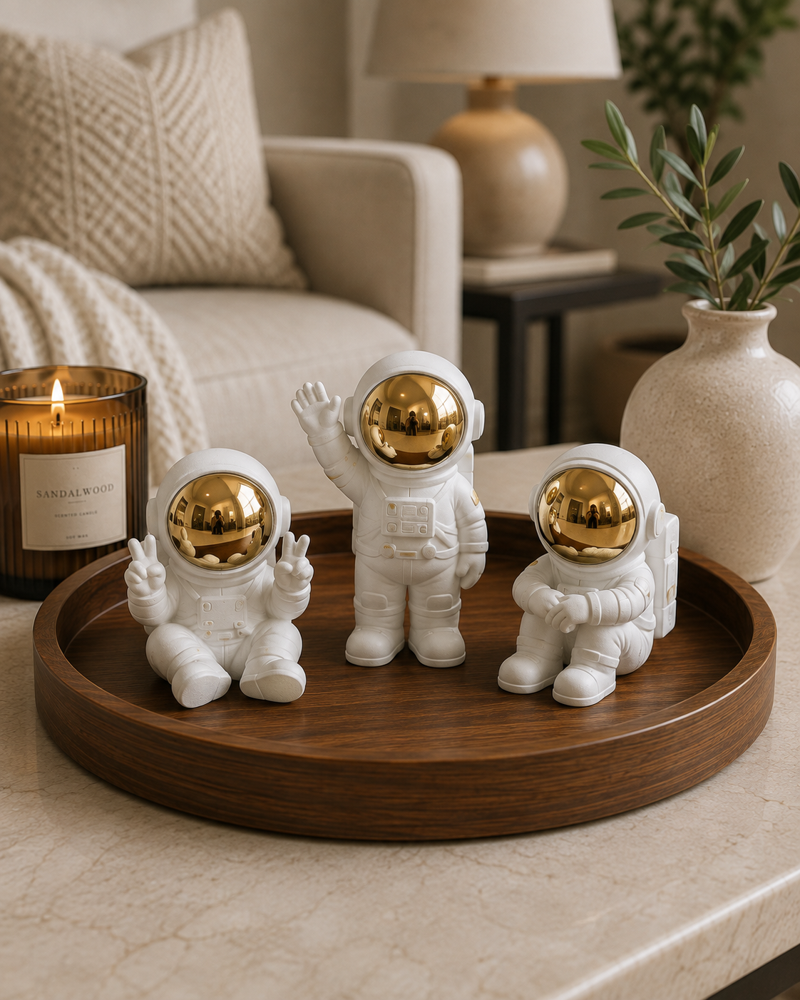
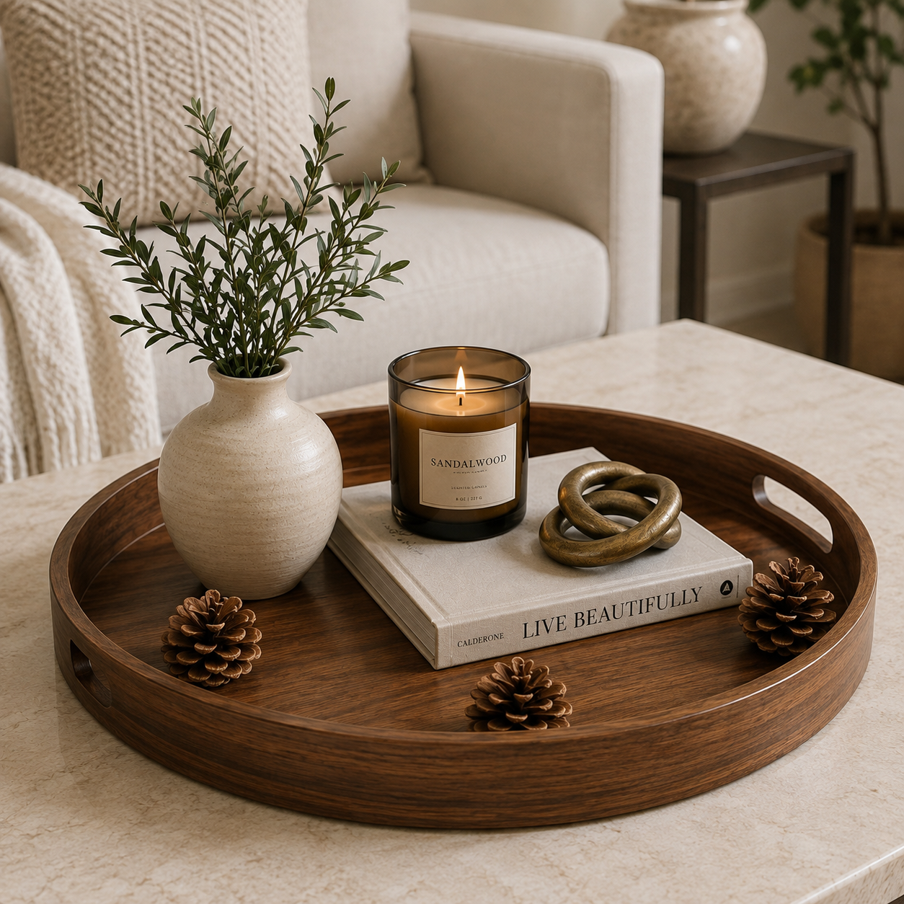

Introduction
A beautiful living room isn't created by expensive function alone. Often, it's the smaller decorative details that make a space feel warm, inviting, and throghfully designed.
Simple additions like candles, decorative trays, ceramic vases, and greenery can instantly make a room feel more stylish and comfortable. These accents help add personality, create visual interest, and bring a sense of balance to your space without requiring a complete makeover.
In this article, we're sharing five beautiful living room deocr pieces that can help transform an ordinary space into a cozy and welcoming retreat. Whatever you're refreshing your home or looking for inspiration, these decor ideas are easy to style and work well with a variety of interior design styles.
Affiliate Disclosure: This article may contain affiliate links. If you purchase through these links, we may earn a small commission at no additional cost to you.
Quick Overview
Here's a quick look at the five living room decor pieces featured in this guide and what they do best.
| Product | Best For |
|---|---|
| Decorative Candle | Creating a warm and cozy atmosphere |
| Artificial Bonsai Plant | Adding greenery without maintenance |
| Ceramic Vase | Bringing simple elegance to any space |
| Decorative Tray | Keeping decor beautifully organized |
| Astronaut Sculptures | Adding a unique and modern decorative touch |
1. Decorative Candle

A decorative candle is one of the easiet ways to make living room feel warm, inviting, and realxing. Whether placed on a coffee table, decorative tray, or side table, a candle can instantly ad a cozy touch to your space.
Beyond providing soft lighting, decorative candles also serve as stylish decor pieces. Their elegant containers, subtle glow, and pleasant fragrances help create a calm atmosphere that's perfect for realxing after a long day or welcoming guests into your home.
Decorative candles work well with many interior styles, from modern and minimalist spaces to farmhouse and contemporary living rooms. Pairing a candle with a vase, trau, or small plant can create a simple yet beautiful focal point that makes your room feel more thoughfully designed.
Why We Like It
- Creates a warm and cozy atmosphere
- Adds soft ambient lighting
- Enhances the look of coffee tables and shelves
- Available in a variety of styles and scents
- Easy to incorporate into any decor theme
2. Artificial Bonsai Plant

Adding greenery is one of the simplest ways to make a living room feel more vibrant and welcoming. An artificial bonsai plant provides the beauty of nature without the watering, pruning, or ongoing maintenance required by real plants.
Its compact size makes it perfect for coffee tables, shelves, side tables, and entertainment units. The unique bonsai shape adds visual interest while helping soften hard surfaces and furniture lines within the room.
Artificial bonsai plants work particularly well in modern, minimalist, and contemporary interiors. They bring a refreshing touch of greenery to your space while staying attractive throughout the year.
Why We Like It
- Adds greenery without maintenance
- Looks great year-round
- Perfect for tables, shelves, and consoles
- Complements a variety of decor styles
- Brings a fresh and natural look to the room
3. Ceramic Vase

A ceramic vase is a timeless decor piece that can instantly elevate the look of a living room. Whether displayed on a coffee table, console table, shelf, or mantel, it adds a touch of elegance and sophistication to the space.
Even when styled simply with a few stems or branches, a vase can create a beautiful focal point. Its sculptural shape and texture help add depth and visual interest without overwhelming the room.
Ceramic vases blend effortlessly with modern, minimalist, farmhouse, and contemporary interiors. They're an easy way to refresh your decor and make your living room feel more thoughtfully styled.
Why We Like It
- Adds simple elegance to any space
- Creates a beautiful decorative focal point
- Works with fresh, dried, or artificial stems
- Complements a wide range of decor styles
- Easy to style throughout the year
4. Astronuat Sculptures

Astronaut sculptures are a fun and creative way to add personality to a living room. Their modern design and unique appearance can instantly draw attention, making them an excellent conversation piece for guests.
These decorative accents work well on coffee tables, shelves, bookcases, and entertainment units. Their playful space-inspired theme adds character while still blending beautifully with contemporary and modern interiors.
Whether displayed individually or as a set, astronaut sculptures can help make your decor feel more distinctive and memorable. They offer a unique alternative to traditional decorative objects while maintaining a stylish and sophisticated look.
Why We Like It
- Adds personality and visual interest
- Creates a unique decorative focal point
- Perfect for modern and contemporary spaces
- Looks great on shelves and coffee tables
- A fun alternative to traditional decor pieces
5. Decorative Tray

A decorative tray is a simple accessory that can make a living room look more organized and intentional. Instead of leaving items scattered across a coffee table or ottoman, a tray helps group decor pieces together in a clean and stylish way.
Decorative trays are often used to display candles, small plants, vases, and other accents. By creating a designated space for these items, they help your decor feel balanced while adding texture and character to the room.
Available in a variety of materials and finishes, decorative trays can complement almost any decorating style. They are both practical and decorative, making them a versatile addition to any living room.
Why We Like It
- Keeps decor neatly organized
- Creates a polished and styled look
- Perfect for coffee tables and ottomans
- Pairs beautifully with candles and vases
- Combines function with style
Frequently Asked Questions
How can I decorate my living room on a budget?
Small decorative accents such as candles, vases, plants, trays, and sculptures can refresh a living room without the cost of replacing furniture or renovating the space.
What decor items make a living room look more stylish?
Decorative candles, ceramic vases, greenery, trays, and statement decor objects are popular choices for creating a more polished and thoughtfully designed living room.
Are artificial plants good for living room decor?
Yes. Artificial plants provide the look of natural greenery without requiring watering, sunlight, or ongoing maintenance, making them ideal for busy households.
Where should decorative trays be placed in a living room?
Decorative trays are commonly placed on coffee tables, ottomans, side tables, and consoles to organize and display candles, plants, and other decorative accents.
How many decorative items should I use in a living room?
A few carefully chosen pieces often look better than overcrowding a space. Focus on creating balance by combining different shapes, textures, and heights throughout the room.
Final Thoughts
Creating a beautiful living room doesn't have to be complicated or expensive. Often, a few carefully chosen decorative pieces can make a significant difference in how a space looks and feels.
From the warm glow of a decorative candle to the fresh touch of a bonsai plant, each item in this guide can help add personality, style, and comfort to your home. Decorative trays, ceramic vases, and unique accent pieces such as astronaut sculptures can further enhance your space while reflecting your personal taste.
Whether you're updating your current decor or starting from scratch, these simple additions can help transform your living room into a more inviting and enjoyable place to relax, entertain, and spend time with family and friends.